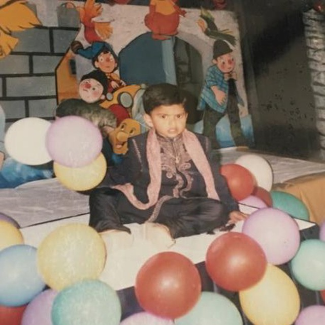

|  |
Pranav PalliI'm an undergraduate student at the University of Nebraska-Lincoln majoring in Computer Science.
|
Bachelor of Science in Computer Science at the University of Nebraska-Lincoln.
Relevant Coursework: Data Structures & Algorithms, Discrete Mathematics, Object-Oriented Programming, Linear Algebra, Multivariable Calculus.
| Proficient | Python, Java, C++ |
| Familiar | Flutter, JavaScript, Swift, Unix, HTML/CSS, SQL |
| Technologies | Git |
| Dates | Work Experience |
|---|---|
| April 2018 - March 2020 |
Research Assistant- Biological Systems Engineering Department @ University of Nebraska-Lincoln Tasks:
|
| Dates | Project |
|---|---|
| April 2019 - March 2020 |
Wheat Spike Counting and Analysis
|
| August 2018 - March 2020 |
Gantry System in Greenhouse Settings
|
| September 2018 - July 2019 |
Autonomous Robot Development
|